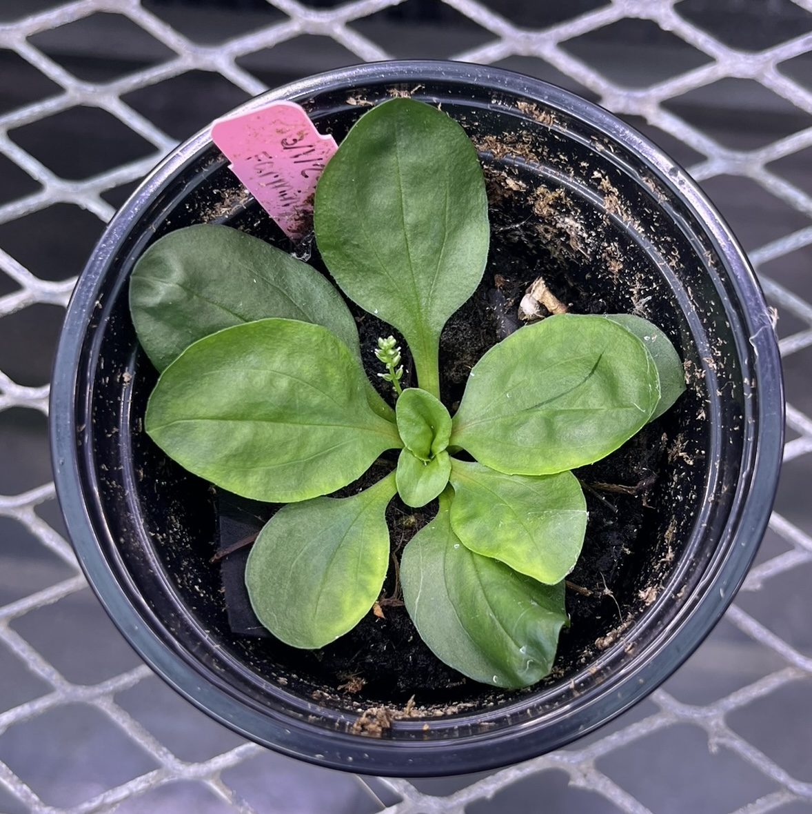

I investigate the impact of environmental change on hosts and their pathogens across spatial and temporal scales.
I am a PhD student in Ecology & Evolutionary Biology at Washington University in St. Louis. My research focuses on how climate change and urbanization impact host and pathogen relationships, distribution, and evolution. I utilize a combination of mathematical and molecular approaches to answer these questions in a common weedy plant (Plantago rugelii) and its fungal pathogen (Golovinomyces sordidus).
I grew up in rural Missouri, where my love for nature began. In 2020, I moved to Mobile, Alabama, to pursue my bachelor's degree at the University of South Alabama (USA). During my time at USA, I conducted reptile and amphibian biodiversity surveys and investigated venom transcriptomics in the Common Garter Snake. Through these experiences, I developed a passion for research and became particularly interested in disease ecology. This passion led me to pursue graduate school, and in 2024, I began my Ph.D. journey in the Penczykowski Lab at Washington University in St. Louis. I love to run, read, and walk my dog with my husband. I am excited to continue investigating the fascinating world of host–parasite dynamics.
I am broadly interested in disease ecology, evolutionary ecology, species distribution modeling, population genetics, and conservation.
